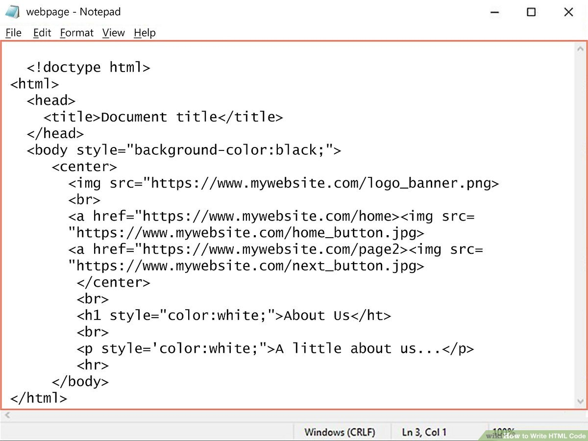
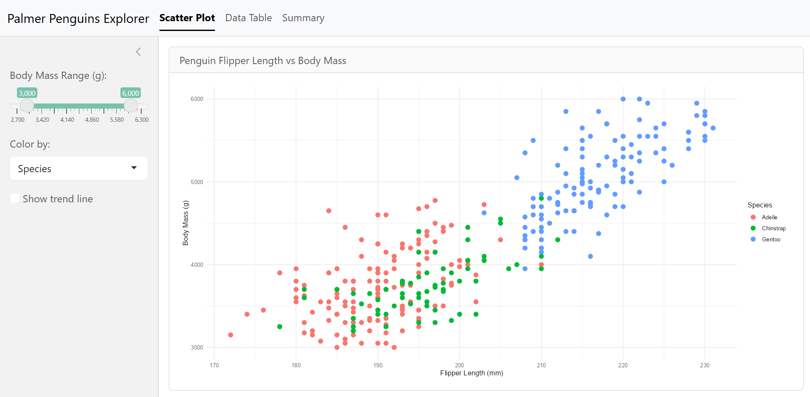
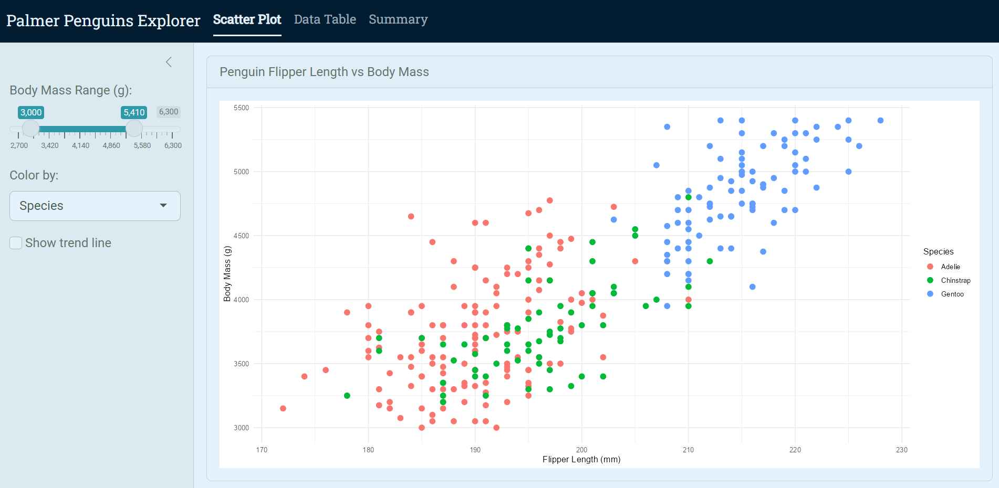

Making Shiny shine
2026-02-27
- Overview of web design (HMTL, CSS, and Javascript)
- Packages to spice up your Shiny app
- Integrating custom elements into Shiny
But before we can make Shiny look nice, we need to understand the basics of web design…

HTML
- HyperText Markup Language
- The skeleton of the web
- Blueprints for structuring content
CSS
- Cascading Style Sheets
- The style of the web (colors, fonts, etc.)
- Helps us make things look nice and pretty
JS 
- JavasScript
- The interactivity of the web
- Makes things move and respond to user actions

HTML
<div><title><p><h1><img>
CSS
- background
- padding
- border-radius
- font-size
Adding CSS to HTML
<div style="background: #0b5ed7; padding: 16px;
border-radius: 12px; display: inline-block;">
<div style="background: #7fbfff; padding: 6px 10px;
border-radius: 8px; font-size: 20px; font-style: italic;
text-decoration: underline; color: #012a4a;">
<p>HTML and CSS</p>
</div>
</div>
Adding CSS to HTML
<div style="display:flex; justify-content:center; align-items:center;
border:4px solid red; border-radius:12px; padding:1rem;
min-height:220px; width:30%; margin:0.25rem auto 0; box-sizing:border-box;
position:relative;">
<img src="images/sablefish.jpg" alt="Sablefish"
style="max-width:100%; height:auto; display:block;" />
Sablefish
</div>
Fortunately we don’t need to do this all by hand

- Shiny uses wrappers around HTML, CSS, and JS
- Uses bootstrap 3 for styling (CSS framework with pre-designed components/styles)
But Shiny’s default styling can feel a bit dated…
{bslib} provides an easy solution

- Founded on modern boostrap 5
- 20+ pre-built themes (e.g.
flatly, minty, darkly)
- Easily customize colors, fonts, and other design elements
- Consolidates design process

- bootstrap 3
- limited styling options
- css required for more customization

- bootstrap 5
- high flexibility
bs_theme() for pre-built or custom themes
Same structure, new functions

fluidPage()navbarPage()tabsetPanel()

page_fluid()page_navbar()page_sidebar()- more
card(), value_box(), alrert()
navbarPage(), tabPanel(), sidebarLayout()
page_navbar(), nav_panel(), layout_sidebar()
Looks better, but still a bit bland
Let’s try using one of the pre-built themes, minty
ui <- page_navbar(
title = "Palmer Penguins Explorer",
# adding custom bslib theme
theme = bs_theme(
theme = "minty" # adding a pre-built theme
)
# ... Other UI code...
)
We are getting there!

Lets add some custome theme on top of minty
ui <- page_navbar(
title = "Palmer Penguins Explorer",
# adding custom bslib theme
theme = bs_theme(
bootswatch = "minty", # start with a pre-built theme
fg = "#ffe18eff", # change foreground color
bg = "#0a3d62", # change background color
primary = "#f59c16ff", # accents
secondary = "#48cae4",
success = "#06d6a0"
)
# ... Other UI code...
)
Looking better
